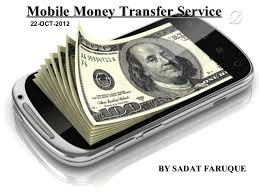

How Far Are We From the Technology Depicted in Westworld?
There was a time when the concept of Artificial Intelligence seemed like a whimsical, farfetched idea. That computers would one day be as smart as humans, and maybe more was something that seemed incomprehensible. The concept has been played with a lot in literature and art for many decades. From Isaac Asimov's Three Laws of Robotics to the sentient computer Hal 9000, from 2001: A Space Odyssey, fiction helped us imagine artificial intelligence. Today though, it's not fiction anymore, but rather a reality. Computers are learning to see like humans, give cricket commentary, and some are even worrying about an AI uprising.

Ed Lane of BBC News wrote a fascinating article about how technology is changing disaster relief.
Consider the efforts of the United Kingdom’s Royal Air Force in distributing to refugees in Northern Iraq the following: water; food; and the technology needed to communicate -- power for mobile phones. Lane describes the initiative:
Alongside tents and drinking water, RAF planes dropped more than 1,000 solar-powered lanterns attached to chargers for all types of mobile handsets to the stranded members of the Yazidi religious community below.
Consider the efforts of the United Kingdom’s Royal Air Force in distributing to refugees in Northern Iraq the following: water; food; and the technology needed to communicate -- power for mobile phones. Lane describes the initiative:
Alongside tents and drinking water, RAF planes dropped more than 1,000 solar-powered lanterns attached to chargers for all types of mobile handsets to the stranded members of the Yazidi religious community below.

Mobile Money Helped 2% of Households in KENYA Rise Out of Poverty
Being able to send and receive money by cell phone has helped lift 194,000 households in Kenya out of poverty, according to a study published Thursday in the journal Science. Women especially have benefitted from the spread of mobile money, which has helped many move from farming into business, economists say.
Being able to send and receive money by cell phone has helped lift 194,000 households in Kenya out of poverty, according to a study published Thursday in the journal Science. Women especially have benefitted from the spread of mobile money, which has helped many move from farming into business, economists say.